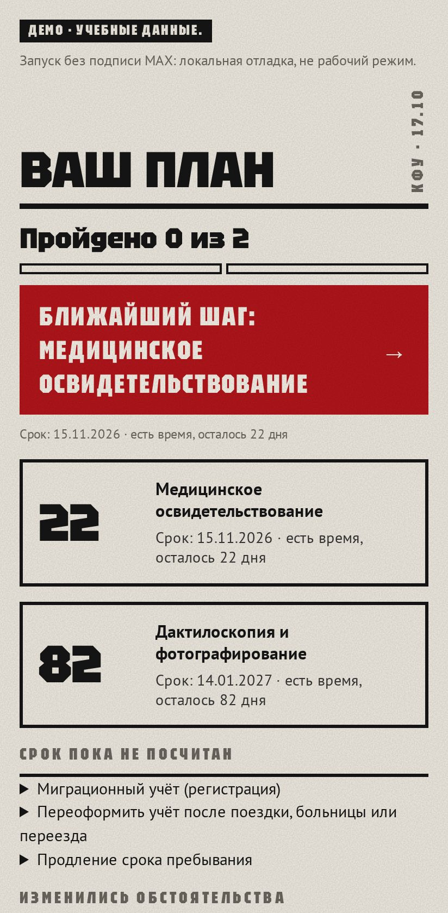
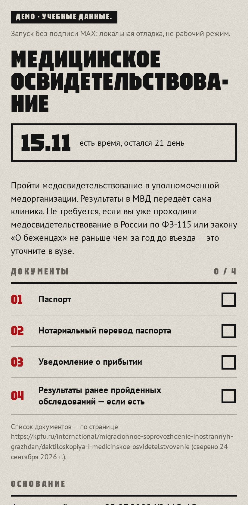
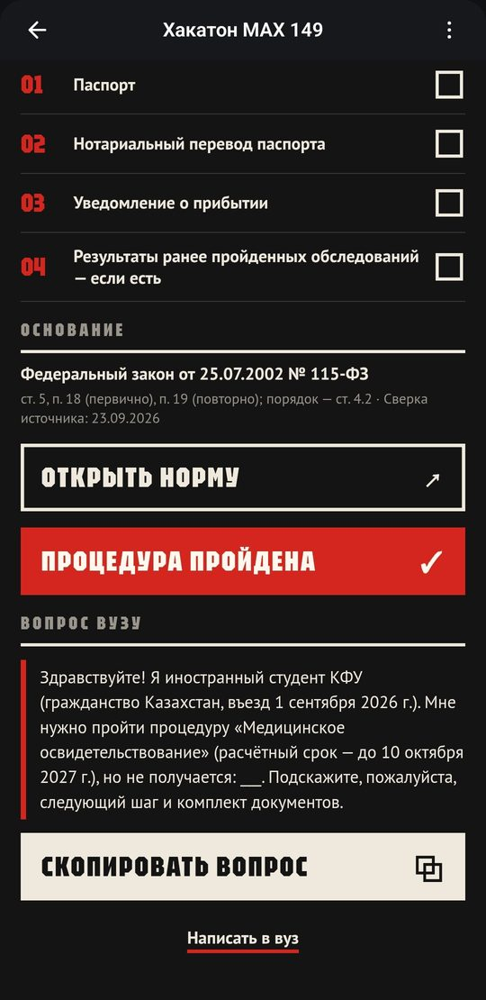

Служебный слайд для технической проверки
Основной сценарий
Финал хакатона Минобрнауки России и MAX, трек «Забота о людях». Казань, 29.10.2026
Бот в MAX ведёт иностранных первокурсников вуза по срокам миграционных процедур
Команда «ИИ в массы»: Иван Резников, Иван Пушкин, Александр Чичерин, Михаил Анцев
≈1 100
иностранных первокурсников в год приезжают в КФУ
Расчёт продукта, грубая оценка по таблице «Сведения» КФУ. Без магистратуры и подготовительного факультета
115-ФЗ, ст. 5, в ред. 162-ФЗ, consultant.ru, сверено 23.09.2026


Блок, плакат и отчёт собираются командами npm run invite, npm run qr и npm run funnel

ИТМО и СПбГЭУ подключены именно так: код не менялся, профиль проверяет автоматический тест
Профили собраны по открытым страницам вузов. Вузы пока не партнёры
Не делает
Хранит
Оператора данных и основания обработки определяем вместе с вузом до пилота
80%
доходят до плана без подсказки
0
критичных ошибок
−30%
времени по сравнению с памяткой
Цели заданы заранее. Результатов пока нет
Профиль вашего вуза соберём сами, нужна проверка специалиста и группа первокурсников
max.ru/t149_hakaton_max_bot
Приложение
Бот и мини-приложение в MAX, одна сессия
Node.js, TypeScript, официальный SDK MAX, React и MAX UI
Явный расчёт сроков по правилам в JSON, без LLM
PostgreSQL: профиль студента и очередь напоминаний
Запуск: docker compose up --build
115-ФЗ, ст. 5, в ред. 162-ФЗconsultant.ru, сверено 23.09.2026
Памятки ИТМО, КФУ, СПбГЭУсверено 16–29.09.2026, docs/product/problem.md
Первокурсники КФУ, 7 вузовdocs/product/audience.md, D-071
Беседы со второкурсникамиdocs/product/demand-interviews.md, D-072
Пилот и рассылкаdocs/product/pilot.md